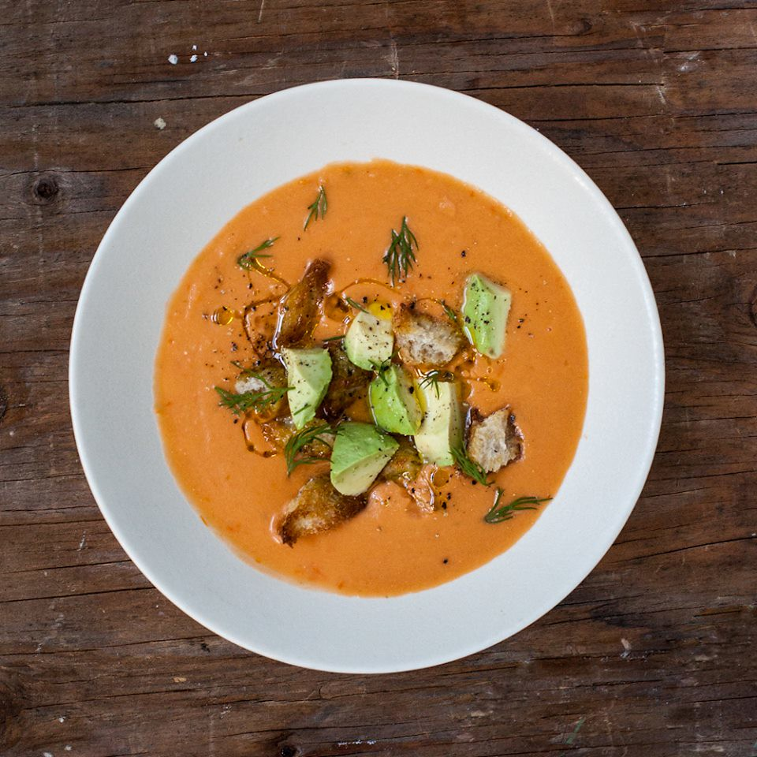
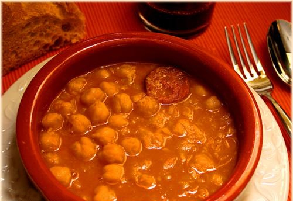
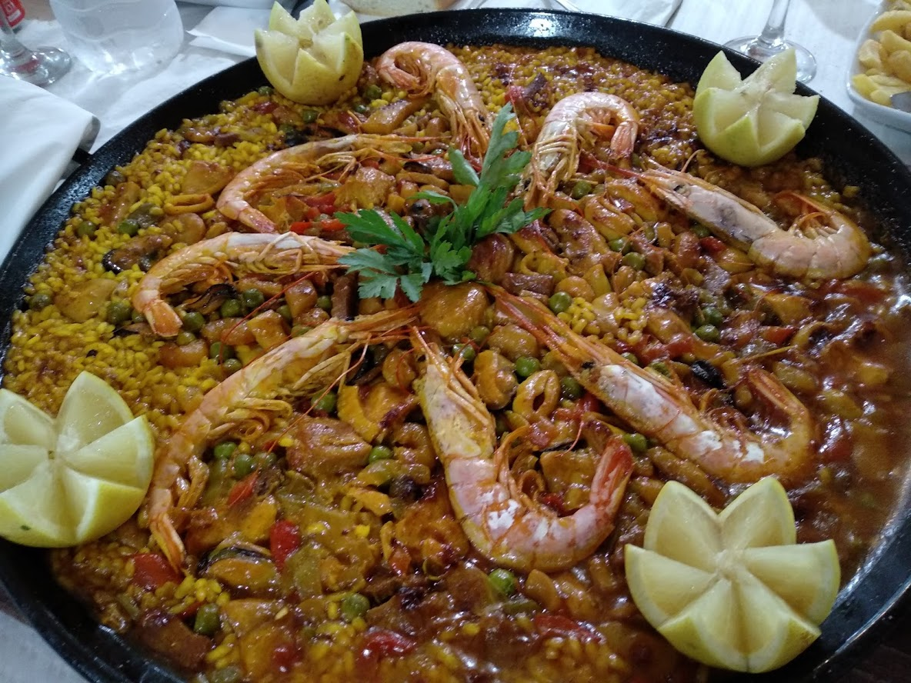

Restaurante UF
Menú del día(19/12/2022) (15€)
Primer plato
- Gazpacho a la fuentealbillense

- Callos a la fuentealbillense
- Paella
- Ensalada mixta
Segundo plato
- Costillas asadas1
- Milanesa a la napolitana
- Pez espada a la plancha
- Salmón a la fuentealbillense
Postres
- Frutas(manzana,pera,melón...)
- Flan de huevo.
- Tarta de queso.
- Bola de helado con coulantde chocolate.
Para beber se puede elegir entre una botella de agua o una copa de vino de nuestra carta. Sin coste adicional.
Por botella de agua extra se cobrará 1.50€ más. Por copa de vino adicional se cobrará 3.50€ más.
Menú infantil(19/12/2022) (10€)
Primer plato
- Macarrones
- Espaguetis
- Arroz con tomate
Segundo plato
- Filete de pollo con patatas
- Huevos con patatas
- Nuggets y croquetas
Postres
- Helado(chocolate, vainilla,fresa...)
- Yogurt a elegir.
- Fruta del dia.